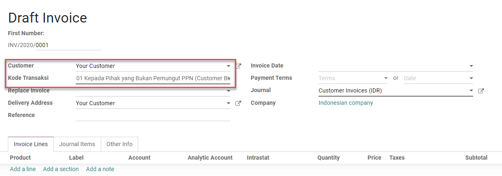
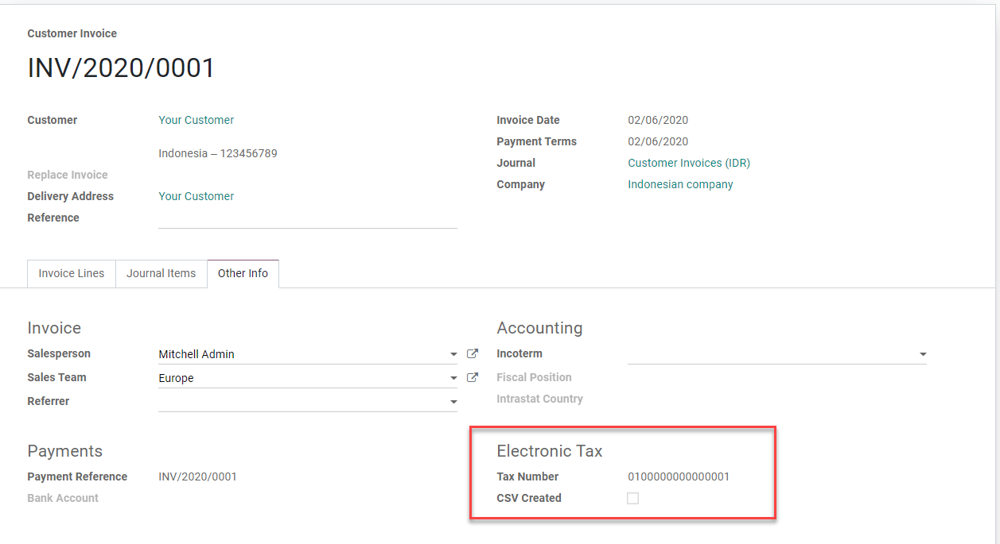

Indonesia¶
E-Faktur Module¶
The E-Faktur Module is installed by default with the Indonesian localization module. It allows one to generate a CSV file for one tax invoice or for a batch of tax invoices to upload to the Tax Office e-Faktur application.
NPWP/NIK settings¶
- Your CompanyThis information is used in the FAPR line in the effect file format. You need to set a VAT number on the related partner of your Odoo company. If you don’t, it won’t be possible to create an e-Faktur from an invoice.
- Your ClientsYou need to set the checkbox ID PKP to generate e-fakturs for a customer. You can use the VAT field on the customer’s contact to set the NPWP needed to generate the e-Faktur file. If your customer does not have an NPWP, just enter the NIK in the same VAT field.

Usage¶
Generate Tax Invoice Serial Number¶
Go to . In order to be able to export customer invoices as e-Faktur for the Indonesian government, you need to put here the ranges of numbers you were assigned by the government. When you validate an invoice, a number will be assigned based on these ranges. Afterwards, you can filter the invoices still to export in the invoices list and click on Action, then on Download e-Faktur.
After receiving new serial numbers from the Indonesian Revenue Department, you can create a set of tax invoice serial numbers group through this list view. You only have to specify the Min and Max of each serial numbers’ group and Odoo will format the number automatically to a 13-digits number, as requested by the Indonesia Tax Revenue Department.
There is a counter to inform you how many unused numbers are left in that group.

Generate e-faktur csv for a single invoice or a batch invoices¶
Create an invoice from . If the invoice customer’s country is Indonesia and the customer is set as ID PKP, Odoo will allow you to create an e-Faktur.
Set a Kode Transaksi for the e-Faktur. There are constraints related to the Kode transaksi and the type of VAT applied to invoice lines.
Odoo will automatically pick the next available serial number from the e-Faktur number table (see the section above) and generate the e-faktur number as a concatenation of Kode Transaksi and serial number. You can see this from the invoice form view under the page Extra Info in the box Electronic Tax.
Once the invoice is posted, you can generate and download the e-Faktur from the Action menu item Download e-faktur. The checkbox CSV created will be set.

You can select multiple invoices in list view and generate a batch e-Faktur .csv.
Kode Transaksi FP (Transaction Code)¶
The following codes are available when generating an e-Faktur. - 01 Kepada Pihak yang Bukan Pemungut PPN (Customer Biasa) - 02 Kepada Pemungut Bendaharawan (Dinas Kepemerintahan) - 03 Kepada Pemungut Selain Bendaharawan (BUMN) - 04 DPP Nilai Lain (PPN 1%) - 06 Penyerahan Lainnya (Turis Asing) - 07 Penyerahan yang PPN-nya Tidak Dipungut (Kawasan Ekonomi Khusus/ Batam) - 08 Penyerahan yang PPN-nya Dibebaskan (Impor Barang Tertentu) - 09 Penyerahan Aktiva (Pasal 16D UU PPN)
Correct an invoice that has been posted and downloaded: Replace Invoice feature¶
Cancel the original wrong invoice in Odoo. For instance, we will change the Kode Transakski from 01 to 03 for the INV/2020/0001.
Create a new invoice and set the canceled invoice in the Replace Invoice field. In this field, we can only select invoices in Cancel state from the same customer.
As you validate, Odoo will automatically use the same e-Faktur serial number as the canceled and replaced invoice replacing the third digit of the original serial number with 1 (as requested to upload a replacement invoice in the e-Faktur app).

Correct an invoice that has been posted but not downloaded yet: Reset e-Faktur¶
Reset the invoice to draft and cancel it.
Click on the button Reset e-Faktur on the invoice form view.
The serial number will be unassigned, and we will be able to reset the invoice to draft, edit it and re-assign a new serial number.